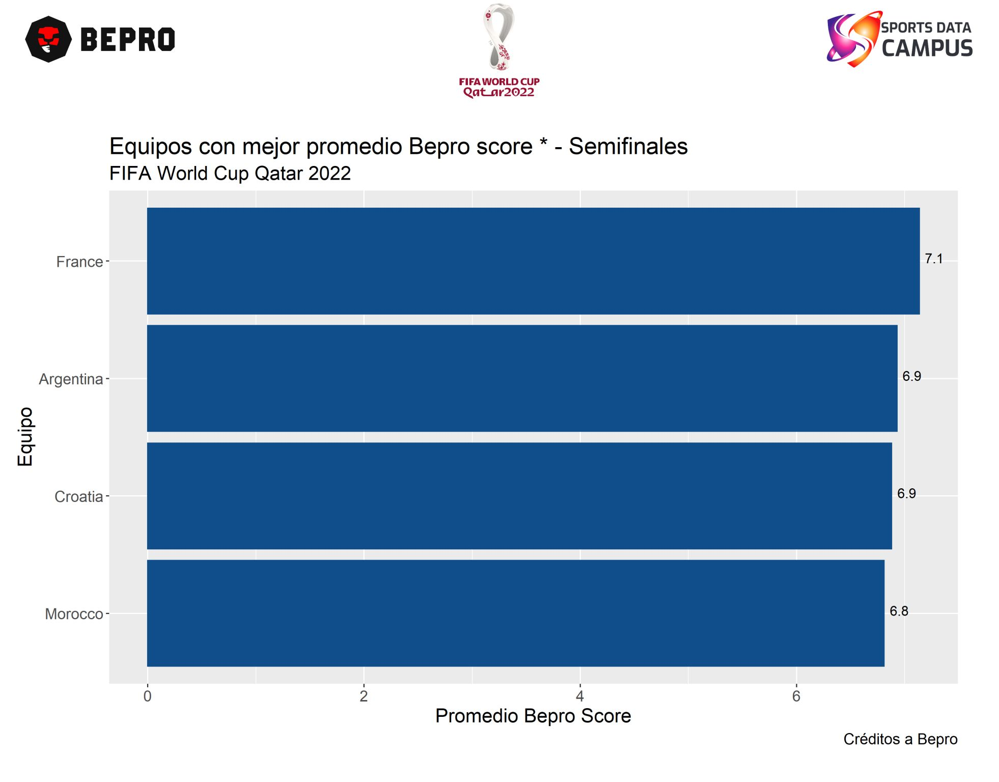
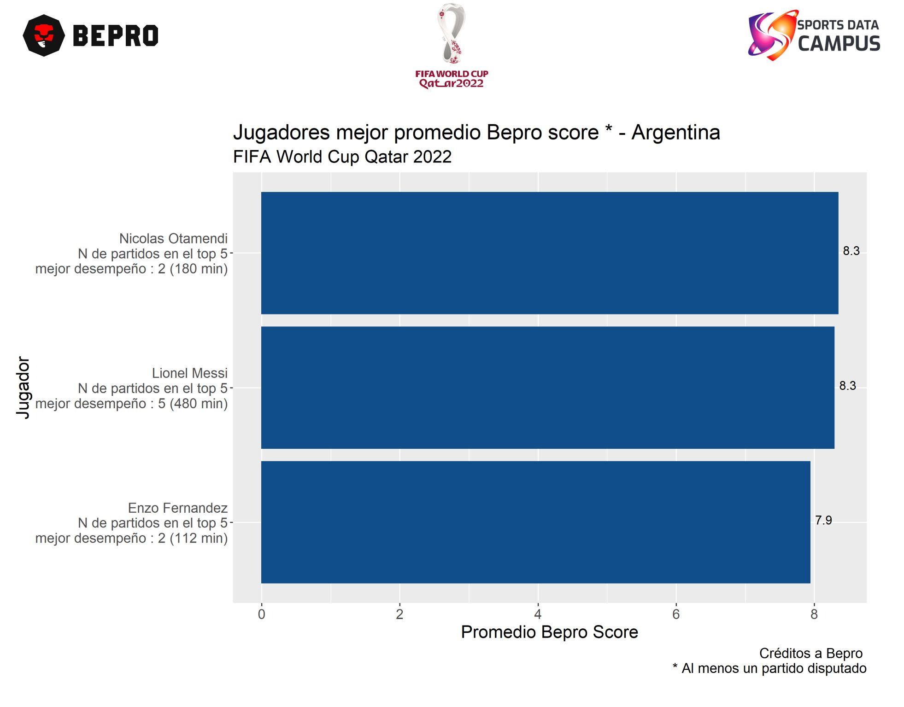
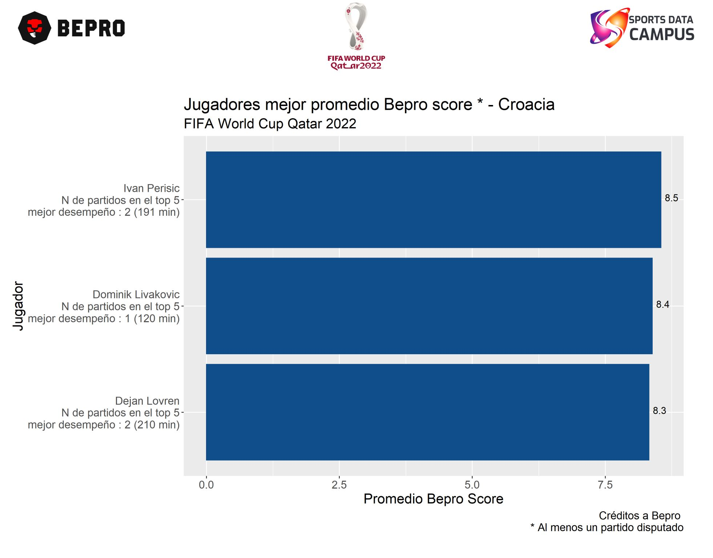
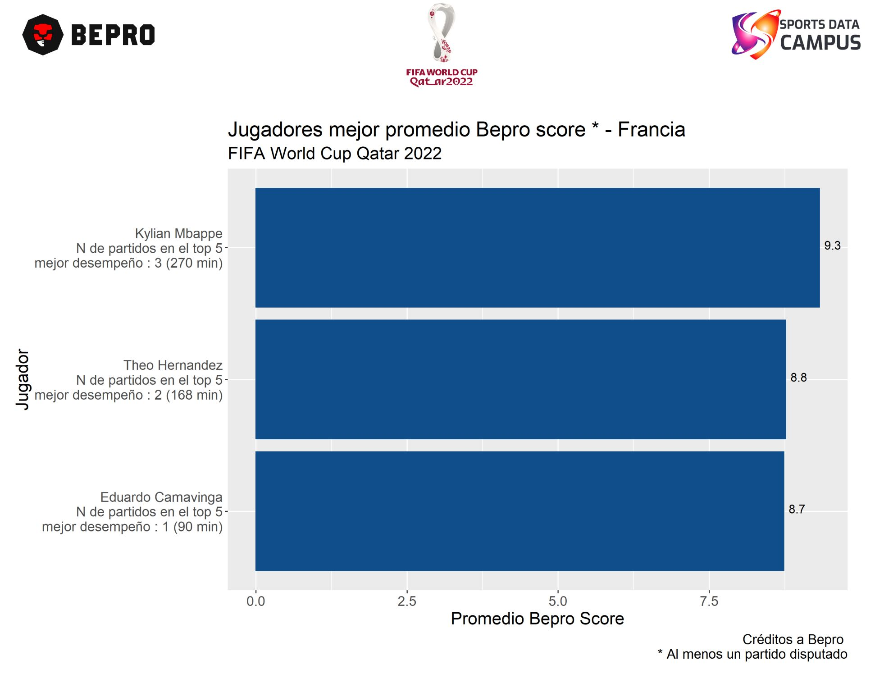

Las semifinales de la copa del mundo Qatar 2022 se conformaron por los siguientes cruces Argentina y Croacia y el partido de Francia y Marruecos.
Gracias a la colaboración de Sports Data Campus y BEPRO fue posible contar con la información de todos los partidos de Cuartos de final y fase de grupos del mundial Qatar 2022 ⚽.
De estos partidos, los jugadores y equipos a seguir se presentan en los siguientes gráficos,
📌 Rendimiento por equipo según el score de Bepro,
💡Francia es la selección que mejor score promedio tiene, Argentina, Croacia y Marruecos la siguen de cerca.
📌 Argentina vs Croacia
💡En Argentina los jugadores a seguir son Nicolas Otamendi, Lionel Messi y Enzo Fernandez. De estos tres destaca Messi que ha estado 5 veces entre al menos los 5 mejores de su equipo en los partidos disputados hasta ahora.
💡En Croacia se tiene a Ivan Perisic, Dominik Livakovic y Dejan Lovren. De estos jugadores Perisic y Lovren han tenido un rendimiento más constante.
📌 Francia vs Marruecos
💡 En Francia se tiene a Kylian Mbappe, Theo Hernandez y Eduardo Camavinga. Mbappe destaca por estar 3 veces entre al menos los 5 mejores de su equipo en los partidos que ha disputado.
💡Marruecos por su parte tiene a Youssef En-Nesyri, Yahia Attiat - Allah y Romain Saiis, el más constante de esta escuadra es su cental Romain Saiis.